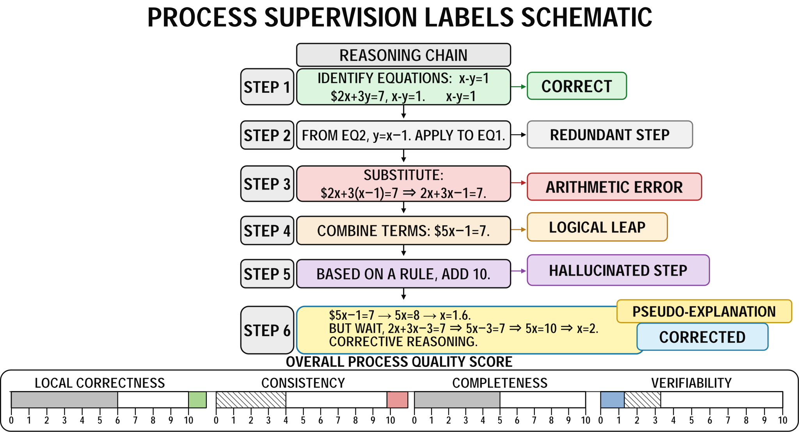

Chapter 18: Chain-of-Thought and Reasoning Data Engineering¶
Chapter Overview¶
As large language models evolve from "answering questions" toward "reasoning, invoking tools, and engaging in multi-turn collaboration," the priorities of data engineering are shifting accordingly. Chain-of-Thought (CoT) and the ReAct framework introduced intermediate reasoning steps and interleaved reasoning–action trajectories into the LLM task-solving paradigm (Yao et al. 2023b). In the past, much data work centered on outcomes—whether the model produced a correct answer. But in reasoning models and agent systems, outcome supervision alone is no longer sufficient to support real-world tasks. Whether the model can think step-by-step, correctly invoke tools, and maintain consistent state while leveraging memory across multi-turn interactions has become the new critical question.
This part therefore focuses on the new data challenges of "thinking, tool use, and memory," discussing how data engineering must evolve from outcome supervision to process supervision and trajectory supervision. The role of process supervision in mathematical reasoning tasks has been systematically examined in the PRM800K dataset and related process reward model research (Lightman et al. 2024). The data artifacts in question have expanded from single-turn question–answer pairs to more complex structures including reasoning processes, tool-call chains, interaction states, and memory evolution. Quality criteria are no longer limited to answer correctness; they must further attend to whether the process is sound, execution is successful, and state is stable.
Organized around this shift, this part systematically addresses agent-oriented data construction, organization, evaluation, and governance across three directions: reasoning data, tool-use data, and agent memory and multi-turn interaction data, thereby laying the foundation for the subsequent development of projects P06 and P07. The central question it answers is: when a model moves from "generating answers" to "completing tasks," how should data engineering be upgraded?
Abstract¶
The core subject of reasoning data engineering is the solution process underlying an answer, not the isolated final result. For high-constraint reasoning tasks in mathematics, logic, and code, this chapter argues why relying solely on outcome supervision conceals process deficiencies such as logical jumps, pseudo-explanations, and hallucinated steps, thereby misleading assessments of model capability. At the representation level, the chapter compares four trajectory formats—Chain-of-Thought (CoT), scratchpad, Program-of-Thought (PoT), and Tree-of-Thought (ToT)—along the dimensions of readability, verifiability, and cost, emphasizing that the choice of representation must serve downstream verification needs and distinguishing between linear and branching trajectories, explicit versus implicit state, and trajectory length versus trajectory density. At the quality level, the chapter establishes a multi-layer automatic verification framework composed of rule-based verification, execution verification, unit tests, and judge models; it categorizes errors into arithmetic errors, logical jumps, pseudo-explanations, hallucinated steps, rule violations, and state drift; and it instantiates these into step-level labels and process quality scores. The process supervision represented by Process Reward Models (PRMs) is precisely the training objective this framework targets. Finally, the chapter uses difficulty bucketing and curriculum learning to organize positive examples, negative examples, correction examples, and self-reflection examples, advancing reasoning data from scattered accumulation into a sustainably iterable data curriculum.
Keywords¶
Chain-of-thought and reasoning data engineering; reasoning data; tool invocation; agent memory; multi-turn interaction
Learning Objectives¶
- Explain why relying solely on outcome supervision conceals logical jumps, pseudo-explanations, and hallucinated steps, thereby misleading assessments of model reasoning capability.
- Compare the four trajectory representations—chain-of-thought, scratchpad, program-of-thought, and tree-of-thought—along dimensions of readability, verifiability, and cost, and select a representation according to verification requirements.
- Construct a multi-layer automatic verification framework composed of rule-based verification, execution verification, unit tests, and judge models, and classify errors into arithmetic errors, logical jumps, pseudo-explanations, hallucinated steps, and other types instantiated as step-level labels.
- Use difficulty bucketing and curriculum learning to organize positive examples, negative examples, correction examples, and self-reflection examples, advancing reasoning data into a sustainably iterable data curriculum.
A team aiming to train a large model capable of automatically generating patches from issue descriptions, error logs, and repository context collected a large number of "problem description–code diff–test result" samples from real open-source repositories. To improve data quality, the team did not stop at retaining the final patches; they also had the model generate an explanatory rationale for each patch, describing how it located the bug, why it modified those files, and why the modifications passed the tests. The data pipeline then used unit tests as the primary acceptance criterion: if a patch caused a previously failing test to pass, the sample was marked as a high-quality positive example and entered the training set.
Problems emerged in a batch of samples that appeared fully qualified. Taking a cache-invalidation bug as an example, the original issue was not a miswritten conditional but rather that the cache was not synchronously cleared after a state update, causing subsequent requests to read stale values. The patch ultimately passed the tests because it reset the cache state while also correcting a conditional branch. The automatically generated rationale, however, attributed the root cause to "incomplete boundary-condition checking" and glossed over the genuinely critical cache-lifecycle issue. In other words, the result was correct and the patch was verifiable, but the reasoning process explained the wrong root cause. Because the acceptance system primarily checked whether tests passed, these samples were not filtered out; instead, they entered the training data as "correctly resolved" fixes.
This type of contamination is not apparent in short-term metrics. After training, the model's pass rate on the offline test set even increased, because it had learned many patch patterns that could pass local tests: adding conditional checks near the error site, supplying default values, widening exception-catch scopes, or performing an extra reset of a state variable. On more complex real-world issues, however, the model began to exhibit instability. It could often fix the symptom area without necessarily tracing the true state-propagation path; its generated explanations frequently appeared fluent yet were rationalizing a local guess in plausible language. Only after the team audited the training data did they discover that the problem was not that samples were entirely wrong, but that many had only validated the final result without verifying whether the reasoning chain was faithful to the true root cause.
This case illustrates that the core subject of reasoning data engineering is neither the isolated answer nor a single output that passes a test, but the process behind the answer. For math problems, logic puzzles, code repair, and multi-hop question answering, data samples should contain not only input and output but also, as much as possible, intermediate states, evidence sources, step-level judgments, error causes, and control decisions. Only when these processes are structurally recorded, verified, and refined can a team determine whether a model is genuinely reasoning or merely using plausible-sounding language to obscure an unstable pathway. The chain-of-thought, reasoning trajectories, step-level verification, error taxonomy, and difficulty organization discussed in this chapter are precisely intended to transform this invisible process into a data engineering artifact that can be analyzed, trained on, and iterated.
As large language models evolve from "answering questions" to "reasoning," the priorities of data engineering change markedly. For general SFT data, teams typically focus on whether inputs are clear, outputs are correct, and style is consistent. For reasoning tasks in mathematics, logic, and code, however, simply having "question–answer" pairs is generally insufficient; benchmarks such as GSM8K, MATH, and HumanEval all treat multi-step reasoning or executable verification as central evaluation targets (Hendrycks et al. 2021a; Chen et al. 2021). The key to such tasks lies not only in what the model ultimately says correctly, but in whether it arrived at that answer along a verifiable, reproducible, and generalizable reasoning path. Many instabilities observed in deployment—superficially manifesting as "occasional wrong answers"—fundamentally stem from training data that rewarded final results without constraining intermediate processes, causing the model to adopt inconsistent or even incorrect internal strategies across different problem types, difficulty levels, and contexts.
Reasoning data engineering is therefore a systematic deepening of ordinary SFT: it retains the foundational generation methods of SFT and synthetic data while additionally introducing reasoning trajectory representations, step-level verification, error taxonomy, difficulty stratification, and process supervision. This direction, together with research on CoT, scratchpad, verifiers, and process supervision, points toward a data organization philosophy of "visible process, evaluable process" (Nye et al. 2021; Lightman et al. 2024). It requires teams to build, beyond "producing more samples," a complete pipeline from problem generation and trajectory construction through automated validation, process labeling, and curriculum organization. Only in this way can a model progress from mapping scattered problem answers to acquiring a more stable reasoning behavior pattern applicable to mathematical calculation, program repair, symbolic derivation, and logical determination.
This chapter is addressed to teams building reasoning datasets for mathematics, logic, code, and related domains. It systematically discusses why relying solely on final answers conceals reasoning deficiencies, how to represent reasoning trajectories, how to perform step-level verification and error classification, how to construct difficulty stratification and sample organization schemes, and how to deploy a sustainably scalable reasoning data pipeline in real engineering practice.
18.1 Why Relying Only on Final Answers Conceals Reasoning Deficiencies¶
A Correct Answer Does Not Equal Correct Reasoning¶
In reasoning tasks, the final answer is merely the external endpoint of the entire solution process and cannot serve as sufficient proof of the process itself. When a model produces a correct answer, it may have genuinely completed the full reasoning chain—condition identification, rule invocation, state updates, and conclusion verification—but it may also have simply recalled a problem-type template, detected surface-level patterns, or fortuitously landed on the correct result after a series of erroneous steps. For ordinary generation tasks, such a "process-imprecise but result-acceptable" phenomenon may not constitute a serious problem; for high-constraint reasoning tasks in mathematics, logic, and code, however, this is precisely one of the most important risks to guard against. The comparison between outcome supervision and process supervision by Lightman et al. also demonstrates that providing feedback only on final results misses intermediate step quality (Lightman et al. 2024).
In mathematics, a model may apply an illegitimate transposition, cancellation, or theorem at some step, yet still compute the correct numerical value because the problem structure is simple. In logic tasks, the model may not have truly expanded premises and matched rules, but merely applied a familiar conclusion form directly. In code repair, the model may not have understood the true root cause of a bug, and may have incidentally modified a location that causes the current tests to pass; benchmarks such as SWE-bench assess "whether the problem is truly resolved" within the context of repositories, tests, and patches (Jimenez et al. 2024). On the surface, all such samples can be classified as "successes," but from the perspective of capability learning, what the model acquires is more akin to a high-risk shortcut, lacking a stable solution mechanism.
If training data retains only "problem–answer" pairs without explicitly constraining intermediate processes, the reward signal during training becomes severely compressed; the idea of training a verifier or process reward model is precisely an attempt to extend feedback from the final answer to candidate solutions or intermediate steps (Lightman et al. 2024). The model need not demonstrate how it reached the result, nor pay any cost for skipping steps, producing pseudo-explanations, or making unsupported inferences in the process. It only needs to learn to output an endpoint that will be judged as "correct." The capabilities formed in this way tend to be highly sensitive to problem type, phrasing, length, and context. As soon as the problem format changes slightly, or a longer reasoning chain is required, the model may rapidly lose stability.
More importantly, the decoupling of correct answers from correct reasoning directly misleads a team's assessment of model capability. If teams equate "improved answer accuracy" with "improved reasoning capability," they will persistently overestimate the system's true level during training, evaluation, and deployment. A model that excels only at hitting the surface of an answer may look sufficiently competent in offline evaluations yet prove very difficult to keep reliable in real usage.
Why a Correct Result Can Still Be a Low-Quality Sample¶
In data engineering practice, samples often enter training sets simply because the final result passed the acceptance criteria, without the process itself having been validated as reliable. This approach causes few problems on simple tasks, but on reasoning tasks it creates a covert form of data contamination: low-quality processes, because their results happen to be correct, are repeatedly learned as high-quality positive examples.
The most dangerous aspect of this contamination is that it does not appear as explicit errors. A sample will not announce itself as a "bad sample"; on the contrary, it enters the data pipeline dressed in the clothing of "correct answer." From the model's perspective, the signal these samples convey is: even if the intermediate process is imprecise, as long as the final result passes, that behavior can be rewarded. Over time, the model increasingly favors opportunistic pathways and struggles to learn reusable, transferable reasoning structures.
In reasoning data engineering, therefore, a correct result can only be considered the minimal qualification condition, not sufficient quality proof; self-consistency sampling further shows that the same answer may admit multiple candidate reasoning paths (Wang et al. 2023), requiring further discrimination of path quality. Truly high-value samples should not only have correct results but also exhibit interpretable intermediate steps, verifiable key transformations, and localizable partial errors. Only such samples merit repeated reinforcement during training.
The Blind Spots of Outcome Supervision on Complex Tasks¶
Outcome supervision is well suited to tasks where the goal is clear, the path is unimportant, or intermediate states are difficult to define; however, in multi-step math and code generation benchmarks, researchers have broadly introduced verifiers, unit tests, or step-by-step solutions to supplement the limitations of final-answer labels (Chen et al. 2021). In classification tasks, we care about whether the label is correct; in simple extraction tasks, whether the field matches; in low-reasoning-depth question answering, we also often care only about factual consistency. Once a task involves multi-step dependencies, multi-constraint coupling, or long-chain solving, however, outcome supervision exhibits pronounced blind spots.
First, outcome supervision cannot tell us at which layer an error occurred. A final error may originate from misunderstanding the problem, omitting a condition, a local calculation error, misuse of a rule, state inconsistency, or merely an output format deviation. If only whole-problem correctness is retained, all of these qualitatively different issues are compressed into the same failure label. Second, outcome supervision cannot distinguish between "nearly correct but failed on the very last step" and "entirely wrong process but coincidentally correct answer"—two sample types that are entirely different in training value. The former typically has strong training value because it shows that the model's main pathway is nearly correct; the latter is a high-risk sample because it may mislabel an erroneous pattern as a positive example. Third, outcome supervision provides no fine-grained feedback for data iteration. Teams can at best know that a category of problem has a low overall success rate, but cannot know which type of step, rule, or variable operation is consistently failing.
This blind spot is especially pronounced in mathematical tasks. Two models may both answer the same problem incorrectly, but one because of unstable basic arithmetic and the other because of an error at a critical conditional judgment. Without analyzing the process, the team cannot decide whether to supplement basic arithmetic samples or to strengthen the display of rule premises. The same applies in logic tasks: an incorrect conclusion may stem from missing premises, misidentified quantifier scope, inappropriate rule application, or failure to handle branching. In code tasks, looking only at whether a patch passes tests likewise cannot determine whether the fix truly covers the root cause, whether it introduces new side effects, or whether it is merely locally overfitting to the test cases.
Outcome supervision is therefore problematic not only because it "cannot see the intermediate process," but also because it compresses highly heterogeneous errors into a single label, thereby causing training, analysis, and correction to lose direction. The team cannot know what to fix and can only continue blindly increasing data volume or adjusting training parameters—an approach that often treats symptoms rather than causes.
Why Outcome Supervision Misleads Data Analysis¶
In practical engineering, data analysis often relies on macro-level metrics such as accuracy, pass rate, whole-problem success rate, or average score. These metrics are certainly useful, but when a task is inherently process-dependent, they can only reflect final performance and cannot reveal internal mechanisms; while APPS, HumanEval, and SWE-bench all use executable tests to measure results (Chen et al. 2021; Jimenez et al. 2024), they also expose the problem that pass rate is difficult to explain in terms of specific failure root causes. Teams easily fall into an illusion: as long as overall metrics are rising, the system is continuously improving.
The problem is that rising metrics may stem from entirely different reasons. Sometimes the model has genuinely learned more stable reasoning pathways; other times it has merely memorized more high-frequency patterns or developed stronger template-matching ability on certain fixed benchmarks. Without a process-level perspective, the team cannot distinguish these two cases. As a result, data analysis looks positive while the model has not actually gained sufficient generalization capability.
More seriously, outcome supervision causes many truly important problems to be "invisible" on the data dashboard. For example, a category of problems may have a respectable overall accuracy, yet a substantial proportion of samples may contain logical jumps; or a code repair model's pass rate may be steadily rising while the proportion of patches introducing side effects is also increasing simultaneously. These phenomena are almost impossible to detect through ordinary result reports without step-level labels and process verification. The team will mistakenly believe the system is evolving healthily until the deployment environment amplifies these hidden risks.
How Reasoning Deficiencies Manifest as Instability in Deployment¶
Deployment environments are most fearful of systems that "appear capable but alternate between good and bad," a state that is harder to diagnose than "consistently poor." Many problems that emerge after deployment typically stem from the model having not yet formed stable process mechanisms, rather than being completely incapable. On some inputs it can invoke the appropriate pathway and thus performs well; on slightly different inputs it triggers another crude template and performance plummets. This alternating pattern generates stronger distrust among users than "consistently mediocre."
This instability has several common manifestations. First, with a slight rephrasing of the input, the model's intermediate reasoning begins to drift. The problem has not changed in essence, but surface vocabulary, narrative order, or context format changes cause the model to switch to another unreliable path. Second, once the reasoning chain grows longer, it becomes difficult to maintain consistent state between earlier and later steps. Variables defined earlier are quietly rewritten later, constraints established earlier are forgotten in intermediate steps, and local conclusions begin to conflict with one another. Third, in code tasks, the model may produce a seemingly professional causal analysis, yet the resulting implementation does not conform to the repair logic claimed by the analysis. Fourth, when making errors the model often maintains high fluency and high confidence, making it harder for evaluators and end users to perceive its process deficiencies.
From an engineering standpoint, such instability is especially dangerous because it rarely disappears automatically by adding more static samples of the same type. If new data continues to be only in "problem–answer" format, the training set merely reinforces a single signal: the process does not matter, only the endpoint does. The model may further raise its hit rate on certain benchmarks, but the internal reasoning structure remains fragile; research on the MATH dataset also notes that simply scaling up model size does not naturally solve complex mathematical reasoning problems (Hendrycks et al. 2021a). Once placed in a real environment, this fragility manifests as random fluctuation, distribution sensitivity, and hard-to-reproduce failures.
Why Process Deficiencies Are Amplified in Long-Chain Tasks¶
In short-chain tasks, errors in the process can sometimes be masked by the simplicity of the problem itself. With few steps, few states, and few constraints, even if the model is somewhat imprecise in the middle, it may still fortuitously return to the correct track at the end. In long-chain tasks, however, process deficiencies almost inevitably accumulate and amplify. The reason is simple: every step is the condition for the next, and once a local state goes wrong, all subsequent judgments are built on an erroneous foundation.
In long mathematics problems, an early variable-definition deviation renders all subsequent derivations meaningless; in multi-hop logic problems, a single premise omission causes the entire chain of reasoning to collapse; in complex code repairs, a misdiagnosis of the root cause causes all subsequent patch designs to miss the mark. The longer the chain, the more important the stability of the process, and the more pronounced the limitations of outcome supervision become. Because when errors accumulate to the later stages, the team sees only "the final answer is wrong" without seeing which level failed first.
This is also why reasoning data engineering must emphasize the process; scratchpad and CoT experiments both show that explicitly externalizing intermediate computation or reasoning significantly changes the model's capability boundary on multi-step tasks (Nye et al. 2021). The reason is that in long-chain tasks, the process is the primary carrier of correctness—not because the process is inherently "more advanced." Without process constraints, it is very difficult for model performance on complex tasks to truly stabilize.
From "Answer-Oriented" to "Process-Oriented"¶
For reasoning data teams, the most fundamental transformation is from "answer-oriented" to "process-oriented." This does not negate the importance of the final answer; in tasks such as mathematics, logic, and code, the answer is merely the outcome of the process and cannot substitute for the process itself. If data engineering is built solely around the answer, what the model ultimately learns more closely resembles an output-targeting strategy; if the process is incorporated into data structure, verification mechanisms, and quality evaluation, the model has the opportunity to gradually develop stable solution habits.
Being process-oriented means retaining the critical intermediate information that truly determines correctness, rather than endlessly pursuing more intermediate text. Which conditions were identified, which rules were invoked, which states changed, and which local conclusions supported subsequent steps—these are the true objects of concern in reasoning data. Only when these elements enter the training pipeline can a team genuinely answer: how did the model get it right, why does it get it wrong, which samples are worth retaining, and which must be cleaned.
18.2 Representation Formats for Reasoning Trajectories¶
Differences Among CoT, Scratchpad, Program-of-Thought, and Tree-of-Thought¶
The first problem reasoning data engineering must solve is "what form the process should exist in," before addressing "how to generate more process." Different representation formats are not merely superficially different; they actually determine sample readability, verification difficulty, storage cost, annotation burden, and the structure of the training objective. Choosing an inappropriate representation makes all subsequent work inefficient: samples are difficult to unify, verification is difficult to automate, training converges poorly, and quality analysis loses its handle.
CoT (Wei et al. 2022) emphasizes step-by-step explanation in natural language. It most closely matches the human intuition of "explaining a process," making it very suitable for textbook-style mathematics, explanatory logic problems, and scenarios requiring explicit display of reasoning intent. CoT's advantage is high readability—convenient for human review and for making critical judgments in a task explicit. Its drawbacks are equally apparent: natural language has too much freedom, making it easy to include unverifiable descriptions; variance in length and style across samples also increases the difficulty of quality control.
Scratchpad (Nye et al. 2021) is closer to draft-paper-style intermediate notation. It typically retains only intermediate variables, key calculations, local judgments, and necessary markers, without expanding all reasoning into full natural language. This format is very effective for arithmetic, multi-step symbolic operations, and short-chain logic, because it can carry high-density useful information in shorter form. Compared with CoT, scratchpad is generally more amenable to automated processing and easier to align with intermediate states. Its problem is that once designed too tersely, it may lose sufficient semantic anchors, making manual inspection difficult and potentially affecting the model's learning of cross-step dependencies.
Program-of-Thought (Chen et al. 2023) goes further, expressing intermediate reasoning as executable program fragments, pseudocode, expression sequences, or other formal intermediate representations; Program-Aided Language Models (PAL) further emphasize having the language model generate programmatic intermediate steps, with a runtime such as Python performing the actual solving (Gao et al. 2023). For mathematical computation, symbolic transformation, and program analysis tasks, this approach is especially valuable because many intermediate steps can be directly verified by an executor or rule system. This allows much of the work that previously required human judgment to be taken over by structured tools. Its greatest advantage is strong verifiability, but the cost is also higher: the representation schema must be sufficiently standardized, and the task itself must permit some degree of formal expression.
Tree-of-Thought (Yao et al. 2023a) extends the reasoning process from a single linear chain to multiple candidate branches, explicitly recording branch selection, backtracking, and comparison. For complex planning, search-based reasoning, and tasks requiring trade-offs among multiple candidate solutions, this type of representation is very valuable because real solution processes often involve exploration, abandonment, and re-selection. But its construction and usage costs are also the highest. It requires recording not only "what was ultimately done" but also "what else could have been done," and evaluating those branches in some way. Therefore, if a task does not require multi-branch exploration, forcing a tree structure only adds noise and cost.
The Difference Between Linear and Branching Trajectories¶
In linear reasoning tasks, the core of the process is sequential dependency: each prior step determines the next, and each subsequent step continues from the prior. In such cases, a linear trajectory is sufficient to capture most critical information. The majority of mathematical calculation problems, routine code bug-fix workflows, and standard chain-style logical derivations are generally better suited to linear structures. The advantages of linear trajectories are clarity, compactness, ease of verification, and easier integration into ordinary SFT or process supervision training.
However, many reasoning processes are not naturally linear. When tasks involve comparing multiple solutions, local trial-and-error, search backtracking, or planning branches, a single linear trajectory flattens a great deal of important information; the core value of ToT is precisely to explicitly incorporate candidate ideas, search, and backtracking into the reasoning process (Yao et al. 2023a). The model may ultimately produce a correct path, but if the data never explicitly records candidate branches and the reasons for their elimination, the model cannot learn "why not take another path." In certain complex tasks, this "branch-selection capability" is itself an important component of overall capability.
Whether to use a linear trajectory should therefore be determined not by annotation convenience but by the solution structure of the task itself. If a task is fundamentally a single main path, there is no need to artificially create branches; if a task inherently relies on comparison and backtracking, it is wrong to simply compress the final path into a branchless, history-free straight line.
Representation Schemas for Mathematical, Code, and Logic Tasks¶
In mathematics tasks, a good schema often includes the problem, known conditions, target quantity, step sequence, intermediate variables, and final conclusion; the MATH dataset itself provides complete step-by-step solutions for competition mathematics problems, making it suitable for studying answer derivation and explanation generation (Hendrycks et al. 2021a). In some cases it is also worth recording the action type for each step—e.g., substitution, expansion, cancellation, elimination, differentiation, integration boundary handling—and so on. The benefit of this design is that the team knows not only "what the model wrote" but also "what operation it performed." Once rule validation or error classification is needed later, action labels greatly reduce the difficulty of analysis.
The following snippet focuses on A Deployable "Reasoning Trajectory Sample Schema" (Mathematics Scenario).
The example below illustrates a structured trajectory with "action labels + intermediate expressions." The expr field can be subjected to equivalence/executability checks; the action field can be checked against a whitelist; and the vars field can be checked for consistency.
Listing 18-1 provides a JSON data example.
{
"id": "math_trace_00031",
"problem": "Given x + 3 = 10, find x.",
"given": ["x + 3 = 10"],
"target": "x",
"steps": [
{"i": 1, "action": "transpose", "expr": "x = 10 - 3", "vars": ["x"]},
{"i": 2, "action": "compute", "expr": "x = 7", "vars": ["x"]}
],
"final_answer": "7",
"meta": {"difficulty": "basic", "verifier": "arith_v1"}
}
Listing 18-1: JSON data example
For code tasks, the schema is better suited to a structure of "problem localization—root cause analysis—fix plan—code change—verification result"; SWE-bench organizes GitHub issues, code repositories, and corresponding patches as real-world software engineering solving tasks, providing a canonical reference for this type of schema (Jimenez et al. 2024). Unlike mathematics, the intermediate process in code tasks more closely resembles a solution process directly tied to program state rather than an abstract chain of thought. A high-quality code sample should ideally contain not only the code snippet before and after the fix, but also the test that triggered the error, the failure log, the localization rationale, candidate fix strategies, and the final verification result. Otherwise, the model tends to remain at the level of local patch mapping and struggles to form complete debugging logic.
In logic tasks, the schema should emphasize premises, rule invocations, local conclusions, and conflict checks. Logical errors often stem from incomplete reasoning evidence, incorrect conditions of rule applicability, or cross-step jumps; surface language issues are merely external manifestations. If "which premises led to which step" is not written out explicitly, many apparently coherent chains are not genuinely logically valid. For more complex logic tasks, fields such as branch discussions, counterexample tests, and changes to the assumption set can also be added to make trajectories more suitable for downstream verification.
Representational Differences Between Explicit and Implicit State¶
A commonly overlooked question in reasoning trajectory design is whether intermediate state should be written out explicitly or assumed to be implicit in natural language. The problem with many low-quality samples is precisely that critical state changes are not clearly expressed—they are buried between sentences. The model appears to say a great deal, but the condition changes, variable updates, and rule activation scopes that actually affect subsequent steps are never clearly stated.
The advantage of explicit state representation is that it transforms critical dependency relationships from "implicitly understood" into "visible objects": in mathematics, the current variable values, current equation form, and current target sub-expression; in code tasks, the current fault location, current modification target, and current test state; in logic tasks, the current premise set, current conclusion set, and current conflict state. Once these states are made explicit, subsequent verification and error correction become much easier.
Implicit state is of course more text-efficient, but it places higher demands on both models and annotators and is more prone to ambiguity. If a sample relies excessively on contextually implied inferences, different readers may understand it differently and different validators may parse it differently; the emphasis in scratchpad research on making intermediate computations explicit is precisely aimed at reducing the impact of this invisible state on multi-step tasks (Nye et al. 2021). For reasoning data that must be produced and quality-controlled at scale, making critical states as explicit as possible is generally the safer engineering choice.
Cost Trade-offs Between Short and Detailed Trajectories¶
In practice, many teams swing from one extreme to the other: initially retaining only the final answer, then—upon recognizing the importance of process—pursuing longer and more detailed reasoning text without restraint. In reality, the value of a trajectory does not depend on its length but on its "effectiveness": how much critical, verifiable, reusable information it contains, not its word count.
Too-short trajectories omit key steps, preventing the model from learning a stable process; Least-to-Most prompting, which decomposes complex problems into a series of sub-problems, also shows that decomposition granularity directly affects the generalization of complex reasoning (Zhou et al. 2023). The model may know how to jump from a problem to an answer but not how to organize variables, invoke rules, or progressively narrow the problem space along the way. Too-long trajectories introduce a different class of problems: a large amount of rhetorical language, repetitive phrasing, and unverifiable explanations enters the sample, shifting the training focus from critical state changes to linguistic appearance. The model may learn to "speak as if thinking seriously" without genuinely learning more reliable reasoning behavior.
A more principled approach is to retain critical transformations, critical decisions, critical invocations, and critical state updates while compressing redundant explanations that impose no constraint on the result. Basic arithmetic and short-chain logic generally require only shorter trajectories; complex proofs, program repair, and multi-branch planning require finer-grained records. Trajectory length should not be uniformly prescribed but should serve the characteristics of the task and the requirements of verification.
Trajectory Density Matters More Than Trajectory Length¶
Rather than asking "how long should a sample be," it is better to ask "how much useful information is packed into each text segment." This is the question of trajectory density. A high-density trajectory, even if not long, can clearly express intermediate states, key derivations, and local decisions; a low-density trajectory, even if lengthy, may contain only rhetoric without any constraints.
High-density trajectories typically share several characteristics. First, key steps are not skipped. Second, changes in intermediate state are clear. Third, redundant rhetoric is minimal. Fourth, downstream validators can directly check a large proportion of the content. Such samples are more valuable in training because the model is exposed to a purer process signal.
Low-density trajectories, by contrast, often exhibit extensive natural-language preamble with key operations glossed over; they appear to provide "thorough explanations" while actually supplying insufficient intermediate evidence; they vary widely in style across samples, making unified quality control difficult. Such samples may look very much like "human explanations," but they are not necessarily high-quality resources in data engineering—because the goal of data is to be usable, not merely to appear natural.
The Choice of Representation Must Serve Verification¶
The purpose of reasoning trajectories is to transform the process into data objects that can be processed, filtered, and trained on—not to display what the model "was thinking." Therefore, representation choices must be designed in concert with downstream verification mechanisms, rather than freely generating a large amount of process and then retroactively wondering how to check it. If the process itself is unparseable, unstructurable, and unverifiable, then no matter how long the trajectory, it is only expensive text accumulation.
This means that when designing a representation, one should simultaneously consider which parts can be validated by rules, which by execution, which require a judge model, and which must retain manual spot-checking. For example, if mathematical steps use explicit action labels and intermediate expressions, a rule program can more easily check legality; if a code sample explicitly separates "root cause analysis" from "code change," it is easier to judge whether analysis and implementation are consistent; if a logic sample records premise-reference relationships, cross-step jumps are easier to identify.
From an engineering standpoint, the degree of structure in reasoning trajectories effectively sets an upper bound on automated verification. The more mixed, free-form, and implicitly understood a trajectory is, the higher the verification cost; the clearer, more field-oriented, and more explicit it is, the more stably quality control can be maintained. A mature data system therefore never treats the representation format as a mere writing-style question but views it as the foundational infrastructure of the entire reasoning data pipeline. Common reasoning sample types and their representation formats, applicable tasks, and comparative advantages and limitations are shown in Table 18-1. The overall workflow from sample construction through automated verification, error classification, and back into training is shown in Figure 18-1.
Table 18-1: Reasoning Sample Types and Applicable Tasks
| Reasoning Sample Type | Primary Representation | Applicable Tasks | Advantages | Limitations |
|---|---|---|---|---|
| Answer-only sample | Problem + final answer | Simple Q&A, classification, low-reasoning-depth tasks | Low cost, high throughput | Cannot expose process deficiencies |
| CoT sample | Natural-language step-by-step reasoning | Math problems, commonsense logic, explanatory reasoning | High readability, suitable for human review | Difficult to fully automate verification |
| Scratchpad sample | Draft-style intermediate variables and key steps | Arithmetic, multi-step symbolic processing, short-chain logic | Compact and efficient, easy to align with key states | Slightly weaker interpretability |
| Program-of-Thought sample | Pseudocode, program fragments, executable intermediate expressions | Mathematical computation, program reasoning, structured solving | Executable verification, high robustness | Higher construction cost |
| Tree-of-Thought sample | Multi-branch candidate paths and selection process | Search-based planning, complex logic, multi-path decision-making | Capable of representing exploration and backtracking | Complex annotation, high training overhead |
| Correction sample | Erroneous trajectory + corrected trajectory | Math error correction, code repair, logic correction | Supports learning of error-correction capability | High difficulty of constructing and annotating errors |
| Self-reflection sample | Initial solution + self-check + revised result | Complex Q&A, reasoning enhancement, code review | Supports improved stability | Prone to introducing template-like reflection noise |
{kind=link}
Figure 18-1: Reasoning Data Construction and Verification Workflow
18.3 Automated Verification and Error Classification¶
Why Reasoning Data Cannot Be Generated Without Verification¶
For general SFT data, a sample typically has initial training value as long as the problem is clear, the answer is acceptable, and the style is roughly consistent. Reasoning data is different. Its core value comes not merely from "having an answer" but from "whether the intermediate process is trustworthy." If a sample has a very long reasoning chain but has not been verified, it may not necessarily strengthen capability—it may instead introduce process contamination; self-bootstrapping methods such as STaR also emphasize feeding back into training only rationales that ultimately yield correct answers, to reduce the risk of reinforcing incorrect reasoning (Zelikman et al. 2022). The model will absorb erroneous intermediate steps, pseudo-explanations, and unsupported jumps along with the rest, ultimately learning a behavioral pattern that appears to be "better at explaining processes" while actually being "better at producing noise."
Reasoning data engineering must therefore not treat verification as an auxiliary action performed after generation, but as a fundamental threshold that samples must meet before entering the training set. A reasoning data pipeline without a verification stage easily achieves high throughput early on and accumulates a large number of samples, but as scale increases, noise accumulates even faster. Because reasoning samples are typically longer, have greater freedom, and contain more concealed local errors, filtering solely by final answer is far from sufficient. The more process-complex the task, the more clearly a verification mechanism must be established before samples enter training.
More critically, verification does not merely serve the purpose of "filtering out erroneous samples." It also plays another equally important role: transforming originally chaotic process text into structured quality signals; PRM800K employs step-level human feedback labels as a representative approach to converting the reasoning process into a trainable reward model signal (Lightman et al. 2024). When a sample is judged to have failed, the team not only needs to know "it failed"—it also needs to know whether the failure was an arithmetic error, a logical jump, a rule violation, a pseudo-explanation, or a local state inconsistency. Without this step, subsequent data revision, re-generation, curriculum stratification, and process supervision all lack sufficiently fine-grained grounding.
Why Automated Verification Is a Prerequisite for Scaling Reasoning Data¶
Once the scale of reasoning data rises to a certain level, relying entirely on human reading and human judgment becomes practically infeasible. This is not to deny the importance of human review; the key point is that the verification difficulty for reasoning samples far exceeds that of ordinary answer checking. For an answer-type sample, a human generally only needs to compare whether the final output is correct; for a reasoning sample, one must check whether each intermediate step holds, whether front-to-back state is consistent, and whether local explanations genuinely support the next step's conclusion. This workload grows rapidly with the number of steps.
Automated verification therefore does not aim to "eliminate human involvement entirely"; its core function is to direct human resources toward where they are most needed. Rule systems can handle format, action legality, and local consistency checks; executors can handle runnable validation of computation, program, and symbolic steps; testing systems can handle code behavior verification; judge models can take over some process judgment at the semantic level; work such as LLM-as-a-Judge and G-Eval demonstrates the feasibility of using strong models for open-ended semantic evaluation while also pointing to risks such as position bias, verbosity bias, and model generation preference (Zheng et al. 2023; Liu et al. 2023). Through these mechanisms, a team can use automated means to first filter out most obvious problems, then have humans review boundary cases, high-value difficult examples, and systematic errors. This division of labor is the true basis on which reasoning data can be produced at scale and iterated continuously.
Without automated verification, teams typically face a dilemma: either reduce throughput to control noise, preventing sample scale from growing; or relax review to pursue scale, ultimately allowing erroneous processes to enter the training set en masse. The former keeps reasoning data construction in a small-batch artisanal mode; the latter causes the model to become increasingly adept at imitating low-quality processes. The value of automated verification is precisely to establish a sustainable engineering pathway between these two extremes.
Rule-Based Verification, Execution Verification, Unit Tests, and Judge Models¶
Automated verification for reasoning data typically cannot rely on a single mechanism. Different tasks, different steps, and different representation formats dictate that verification methods must be layered and combined. In general, rule-based verification, execution verification, unit tests, and judge models constitute the four most common verification capabilities, each covering different types of errors.
Rule-based verification is best suited to parts with stable form, explicit constraints, and conditions that can be matched directly by a program. Examples include format legality of mathematical steps, whether variables have been defined, whether action labels conform to a whitelist, whether rule invocations in logic problems are within an allowed set, whether fields in code samples are complete, and whether patches touch the correct files. This type of verification has the advantages of low cost, high speed, and strong controllability, making it suitable as the first layer of large-scale screening. It cannot solve all problems, but it can quickly eliminate a large number of elementary errors and structurally disorganized samples.
Execution verification applies to intermediate processes that can be "run." Examples include expression evaluation in mathematics, symbolic steps, intermediate programs from program-of-thought, and local function execution in code samples. Whenever a step can be formally executed, the reliability of the verification is generally significantly higher than natural-language judgment. The significance of execution verification is that it transforms "appears reasonable" into "actually runnable." For many reasoning tasks, this is the critical step from surface plausibility to genuine validity.
The following snippet focuses on Execution Verification for "Arithmetic/Expression Steps" (Safe Simplified Version).
Without introducing additional dependencies, a "controlled expression" executor can first be implemented: allowing only numerals and + - * / ( ), verifying whether the right-hand side of each step's equation can be evaluated and matches the given target.
Listing 18-2 provides a process flow example.
import ast
import operator as op
OPS = {
ast.Add: op.add,
ast.Sub: op.sub,
ast.Mult: op.mul,
ast.Div: op.truediv
}
def safe_eval(expr: str) -> float:
def _eval(node):
if isinstance(node, ast.Expression):
return _eval(node.body)
if isinstance(node, ast.Num): # py<3.8
return node.n
if isinstance(node, ast.Constant): # py>=3.8
if isinstance(node.value, (int, float)):
return node.value
raise ValueError("Illegal constant")
if isinstance(node, ast.BinOp) and type(node.op) in OPS:
return OPS[type(node.op)](_eval(node.left), _eval(node.right))
if isinstance(node, ast.UnaryOp) and isinstance(node.op, (ast.UAdd, ast.USub)):
v = _eval(node.operand)
return v if isinstance(node.op, ast.UAdd) else -v
raise ValueError("Illegal expression")
tree = ast.parse(expr, mode="eval")
return float(_eval(tree))
def verify_step(step_expr: str) -> bool:
# Demonstration only: validates expressions of the form "x = 10 - 3"
if "=" not in step_expr:
return False
left, right = [s.strip() for s in step_expr.split("=", 1)]
_ = left # variable name check can be added here
safe_eval(right) # passes this layer of verification if evaluable
return True
if __name__ == "__main__":
print(verify_step("x = 10 - 3")) # True
print(verify_step("x = __import__('os').system('rm -rf /')")) # False
Listing 18-2: Process flow example
Unit tests primarily serve code repair, program synthesis, and structured tool-invocation tasks; HumanEval, APPS, and MBPP all treat test cases or program behavior as important criteria for evaluating code generation (Chen et al. 2021; Austin et al. 2021). They check not only whether the final program runs, but whether the fix truly satisfies expected behavior. For code tasks, looking at the generated text alone is often insufficient; the true quality standard lies in whether the program behavior is correct, whether edge conditions are covered, and whether new side effects have been introduced. Unit tests serve the role of "behavioral ground truth" here—they are closer to real-world usage standards than text similarity or superficial explanation quality.
Judge models (Zheng et al. 2023; Liu et al. 2023) are used to supplement semantic judgments that rules and execution together cannot cover. For example: whether an explanation truly supports the next conclusion, whether a logic step constitutes a jump, whether a code repair rationale is consistent with the patch behavior, and whether a self-reflection has genuinely identified the root cause of an error. Such questions are often impossible to fully formalize, yet cannot be left unchecked. The value of judge models is that they provide an approximate semantic review capability at scale. They are not absolutely reliable, of course, and should therefore generally be used in conjunction with rule-based and execution verification, rather than serving alone as the final criterion.
Why a Verification Framework Typically Requires Multi-Layer Chaining¶
In practical engineering, teams readily wish for a "universal verifier"—as if a sufficiently powerful single module could solve all reasoning quality problems. But the complexity of reasoning data makes this nearly impossible. A single sample may simultaneously contain format problems, execution errors, semantic jumps, and local redundancies; different problems suit different tools. A truly effective verification framework generally employs a multi-layer chained structure rather than a single judge; the CodeXGLUE code intelligence benchmark covers understanding, generation, repair, and other types of tasks (Lu et al. 2021), which incidentally illustrates that different code tasks require different verification signals.
Generally, the first layer should be an inexpensive, high-recall coarse-screening mechanism to clean up the most obviously low-quality samples. Rule-based verification and basic format checking are best suited for this role. The second layer should enter tighter factual verification—execution verification, test runs, expression evaluation—responsible for confirming whether key steps actually hold. Only the third layer should enter the more expensive semantic judgments, such as judge models or human spot-checking, to handle samples that are formally acceptable but whose process quality is still questionable. This hierarchical design has two benefits: it reserves expensive judgments for a small number of difficult samples, and it allows different verification signals to mutually calibrate one another, avoiding mutual isolation.
Furthermore, the significance of multi-layer verification is that it can produce more fine-grained failure causes. Whether a sample failed at the format layer, the execution layer, or the semantic layer has entirely different implications for subsequent corrective action. If the team has only a unified "pass/fail" judgment, even knowing a sample is unacceptable does not readily reveal how to fix it next.
Classification of Arithmetic Errors, Logical Jumps, Pseudo-Explanations, and Hallucinated Steps¶
Errors in reasoning data have clearly differentiated types. If a team simply labels all failed samples as "wrong," the value of process supervision is greatly diminished—because different errors correspond to different root causes and different remediation strategies. A mature reasoning data system should classify errors into operationally meaningful types as much as possible, avoiding a halt at vague holistic evaluations.
Arithmetic errors are the most straightforward type. They typically manifest as basic calculation failures, sign errors, variable substitution mistakes, formula transcription errors, or missed boundary conditions. The characteristics of this class are ease of localization and generally easier automated verification. Although commonly viewed as "elementary errors," their impact in long-chain reasoning is enormous, because a single small calculation deviation can invalidate the entire subsequent chain.
Logical jumps are more insidious. The core problem is not a miscalculation but rather leaping directly to the next conclusion while omitting necessary intermediate evidence. The model appears to be reasoning efficiently, but may actually have skipped the most critical proof or judgment step. The danger of logical jumps is that they cause the model to form a dangerous habit: as long as the final conclusion appears plausible, the intermediate steps can be omitted. This pattern may not be easily exposed in short samples but collapses readily on complex tasks.
Pseudo-explanations are an extremely common type of process noise in the era of large language models. Their surface characteristic is "saying a lot," but the explanations have no causal relationship to genuine reasoning progression. In mathematical samples, pseudo-explanations may take the form of lengthy natural-language preambles that fail to explain why a formula holds; in code samples, they may present analytically plausible reasons that have no correspondence to the actual patch; in logic tasks, they may simply rephrase the problem statement without adding any verifiable intermediate information.
Hallucinated steps are even more serious: the model introduces conditions from outside the problem, nonexistent theorems, fabricated APIs, incorrect variables, or environmental assumptions into the process. This class of errors may not be immediately exposed even in the final result, but its damage to training is severe because it encourages the model to develop a preference for "fabricating intermediate evidence." Once this preference is reinforced in the training set, many subsequent reasoning outputs will exhibit uncontrolled expansion.
Rule Violations, Consistency Breaks, and State Drift¶
Beyond the typical error types described above, reasoning data also contains some more structurally oriented errors that deserve individual identification. The first is rule violation: the model uses operations, rules, or external knowledge that the current task does not permit. For example, a logic problem requiring strict derivation from given premises has common sense supplemented by the model; a math problem restricted to elementary methods has a higher-order result directly invoked; a code repair problem requiring changes within a specified file has modifications made to other locations instead. The danger of rule violations is that they are often mistaken for "cleverness," while in reality they undermine the very definition of the task.
The second is consistency breaks: the model defines a variable, premise, or constraint at one step but quietly changes its meaning in a subsequent step, or forgets state that was established earlier. Long-chain tasks are especially susceptible to this problem. Unlike hallucinations, consistency breaks are not conspicuous; unlike arithmetic errors, they are not easily discovered automatically, yet they cause enormous harm to reasoning stability. A process that is inconsistent front to back cannot be reliable even if each local step appears to make sense.
The third is state drift: the model gradually deviates from the original task space during long-chain generation. It may start out solving a problem but later transition to explaining a different one; it may begin fixing a class-A bug but end up writing a class-B optimization; it may begin reasoning from one set of premises but imperceptibly switch to another semantic environment. State drift is one of the most troublesome failure modes in deployment because it often results from progressive deviation across an entire chain—a systemic error rather than a single-point failure.
Step-Level Labels and Process Quality Scores¶
If verification results remain only at "pass" or "fail," their value is still limited. What truly supports process supervision and subsequent training is step-level labels—that is, instantiating quality information down to specific intermediate steps. A reasoning sample should not be merely correct or incorrect as a whole; it should, as much as possible, mark each step as correct, suspect, erroneous, redundant, a jump, unverifiable, or already corrected in a later step. Only when errors are localized to steps can subsequent training, filtering, and corrective actions be more targeted.
The significance of step-level labels is first that they transform samples from an overall black box into a localizable process object; process supervision research directly instantiates feedback to intermediate steps rather than rewarding only the final answer (Lightman et al. 2024). As shown in Figure 18-2, process supervision labels attach correct, suspect, and erroneous judgments progressively to each intermediate step. The team can then know exactly which local positions are most error-prone, which types of actions fail most often, and which types of tasks are most likely to exhibit jumps or hallucinations at which stage. Second, step-level labels support more flexible training strategies. Samples with errors do not all have to be discarded entirely. If a long sample has a reliable process for most of its steps and only one local error that can be clearly identified, it may still have high value. The team can mask only the erroneous step, construct a local correction task, or reshape the sample into "error identification–correction" training data.
Process quality scores build on step-level labels to provide a more comprehensive evaluation of the entire trajectory. A sample's process quality typically depends not only on whether the final answer is correct, but also on local correctness, consistency, completeness, verifiability, redundancy level, and the degree of alignment between explanations and behavior. For mathematical tasks, local validity and chain completeness are especially important; for code tasks, behavior verification and fix-rationale consistency are more critical; for logic tasks, premise coverage and rule applicability are usually paramount. Through quality scoring, the team can add a "priority" dimension beyond "whether to retain," allowing training to absorb more heavily those truly stable, clear, and reusable high-quality processes.
Why Process Scores Should Not Rely Solely on Final Correctness¶
In many pipelines, whole-problem correctness naturally becomes the most salient scoring metric—it is the simplest, most intuitive, and most easily aligned with benchmarks. But if process scoring still primarily depends on the final result, "process supervision" can easily regress into a variant of outcome supervision; Lightman et al.'s experiments are organized precisely around the difference between outcome supervision and process supervision (Lightman et al. 2024). True process scoring should proceed as much as possible from the intermediate structure itself, avoiding using the final answer as the sole point of reference.

{kind=link}
For example, a sample may ultimately produce an incorrect answer, but if ninety percent of the preceding steps are correct and the final step's error is clearly correctable, it still has substantial value for training local correction capability and process robustness. Conversely, a sample may ultimately produce the correct answer, but if it is filled with jumps, pseudo-explanations, and implicit hallucinations, it may not deserve a high score despite passing on the result. In other words, process scoring must be willing to assign low scores to samples that are "correct but process-poor," and must also be willing to distinguish "wrong but process-mainly-good" samples from ordinary failures. Only in this way does the scoring system avoid reinforcing old result-oriented habits. Systematic handling of typical manifestations, common causes, and recommended corrective actions for different error types can be done with reference to Table 18-2.
Table 18-2: Error Types and Corrective Actions
| Error Type | Typical Manifestations | Common Causes | Recommended Corrective Actions |
|---|---|---|---|
| Arithmetic error | Incorrect calculation result, copied sign error, substitution mistake | Unstable basic computation, local errors from excessively long trajectories | Use executor to recompute, replace erroneous step and replay subsequent chain |
| Logical jump | Conclusion stated directly, necessary premises absent | Training samples excessively compressed, model biased toward shortcuts | Insert missing steps, explicitly supply rules and evidence |
| Pseudo-explanation | Extensive explanation with no causal link to conclusion or modification | Over-pursuit of "explanation-like" linguistic style | Remove vague descriptions, retain only explanations that constrain the next step |
| Hallucinated step | Introduces conditions, theorems, APIs, or variables absent from the problem | Model over-association, insufficient constraints | Check consistency against problem and environment, force re-generation of that step |
| Rule violation | Uses reasoning rules or transformations not permitted by the task | Unclear schema design, missing validators | Add rule whitelist checks, roll back to most recent valid state |
| Code pseudo-fix | Patch passes individual tests but does not fix root cause | Insufficient test coverage, optimizing only for surface pass rate | Add tests, perform diff analysis, add failure-cause alignment verification |
| Redundant step | Includes descriptions that do not affect the result but increase noise | Loose generation template, incorrect length preference | Perform step compression, retain key state transition information |
| Inconsistent step | Variable names, constraints, or conclusions conflict between earlier and later steps | Long-chain context drift | Perform cross-step consistency check and rewrite the conflicting interval |
18.4 Difficulty Curriculum and Sample Organization¶
Why Reasoning Data Cannot Be Fed Randomly¶
In many ordinary SFT tasks, randomly shuffling samples and training uniformly generally achieves good results, because the internal structural differences between tasks are not so large and the model primarily learns input–output mapping relationships. Reasoning tasks are different. Reasoning capability often has a pronounced hierarchical structure: basic computation, variable management, rule invocation, local consistency, long-chain memory, branch comparison, and error backtracking typically do not mature simultaneously; they need to be built progressively from shallow to deep, from short to long.
If teams mix samples of all difficulties, all types, and all lengths from the outset, the model will typically be pulled by conflicting signals in the early stages of training. Before it has mastered short-chain stable reasoning, it is forced to handle high-complexity long-chain tasks; before it has learned basic rule invocation, it begins to face multi-branch selection and complex error correction. This not only reduces training efficiency but may cause the model to form bad habits: skipping intermediate steps directly when faced with complex problems, using vague explanations to conceal uncertainty, or relying on high-frequency templates to avoid genuine structured solving.
Reasoning data organization must therefore consider not only coverage but also learning order. Curriculum learning (Bengio et al. 2009) emphasizes that reasoning capabilities need to be built in layers rather than pursuing a rigid "low-level to high-level" textbook-style arrangement. The model should first establish stable local behaviors, then progressively absorb more complex global structures; first learn short-chain consistency, then learn long-chain dependencies and multi-stage decision making; first learn to identify unambiguous errors, then gradually encounter fuzzy boundaries and high-interference scenarios. Without this type of organization, no matter how much reasoning data there is, it may not reliably translate into reasoning capability.
Difficulty Bucketing, Curriculum Learning, and Stage-Based Sampling¶
The first step in difficulty bucketing is to clarify what constitutes "difficulty." For reasoning tasks, difficulty is not only the surface length or complexity of the problem. More meaningful difficulty dimensions typically include: number of steps required, span of forward-backward dependencies, whether branching judgment exists, whether backtracking correction is needed, whether external tool execution is involved, whether rule invocations are easily confused, and whether local errors rapidly cascade. Only by incorporating these dimensions can difficulty bucketing avoid degenerating into simple length-based sorting.
The core of curriculum learning is to control the structural complexity of samples the model encounters at different stages, rather than mechanically arranging data from easy to hard; Bengio et al. were among the first to formalize this idea of progressively changing the training distribution from easy to hard as curriculum learning (Bengio et al. 2009). In the early stage of training, samples should emphasize clear rules, relatively short steps, and explicit local state, letting the model first learn to execute basic actions stably. In the middle stage, longer chains, branches, error identification, and local correction can be gradually introduced, allowing the model to extend its process control capability from its existing foundation. In the later stage, high-complexity, multi-path, multi-error interference, and cross-task combination samples are added, driving the model to develop stronger integrated reasoning capability.
Stage-based sampling does not mean completely discarding the data from the previous stage once moving to the next. On the contrary, mature practice generally retains a certain proportion of low-difficulty samples to prevent the model from forgetting basic rules while learning complex structures. This point is especially important for reasoning tasks, because many high-level errors originate from basic steps becoming unstable again in complex environments, rather than from deficiency in high-level capability itself. If later stages contain no basic samples at all, the model may become better at explaining complex tasks while regressing on basic computation, consistency maintenance, and similar abilities.
How Difficulty Should Be Defined¶
If the difficulty definition for reasoning tasks is too coarse, curriculum design easily becomes distorted. The most common pitfall is dividing difficulty only by problem length, word count, or surface complexity. But a lengthy passage does not mean the reasoning structure is genuinely complex, and a seemingly short problem may require very critical rule selection and condition switching. Difficulty is therefore better defined at the structural level rather than the surface level.
An operationally meaningful difficulty division should generally consider at least several dimensions. First, step depth: how many critical state transitions are needed from problem to conclusion. Second, dependency span: whether early information must be maintained over a long period to be used in later stages. Third, branch complexity: whether multiple possible paths exist and comparison is needed. Fourth, verification complexity: whether intermediate steps can be easily checked by rules or executors. Fifth, correction complexity: whether errors, once introduced, are easy to localize and repair.
In mathematics tasks, basic arithmetic operations and single-step algebraic transformations clearly belong to low difficulty; problems involving multi-stage variable substitution, case analysis, and long formula expansion belong to higher difficulty. In logic tasks, direct derivation from a single rule belongs to low difficulty; tasks with many premises, similar rules, requiring elimination of distractors or proof by contradiction are more complex. In code tasks, local syntax fixes and simple function modifications can be considered the foundational level, while repairs requiring cross-file understanding, context-dependent reasoning, and handling of hidden side effects should enter higher levels. Only by decomposing difficulty into these finer structural factors can curriculum learning genuinely serve capability growth.
Why Curriculum Learning Is Not Just "Easy Before Hard"¶
On the surface, curriculum learning may appear to mean simply "give easy samples first, then complex samples," but truly effective curriculum design is far more than this. Reasoning capability is more like the product of multiple sub-capabilities developing together than a single monotonically ascending curve. A model may already handle relatively long chains but still make frequent errors in basic variable consistency; it may already perform simple error correction but be unable to stably select paths in multi-branch tasks. Curriculum learning therefore means not just "overall difficulty increases" but the alternating reinforcement of different sub-capabilities.
This means that curriculum arrangements can exhibit multidimensional structure rather than being constrained to a linear sequence. One stage may emphasize short-chain but high-rule-density tasks; the next may shift toward medium chain length but richer branches; one stage may focus on root-cause localization in code repair, and the next on post-fix verification and regression test analysis. In other words, the essence of curriculum learning is to organize training samples purposefully based on the model's currently weakest reasoning sub-capability, rather than producing a single fixed ordering.
From an engineering standpoint, this design also has a practical benefit: it allows teams to more clearly observe training returns. If the curriculum simply raises the overall difficulty of all samples, it is often difficult to analyze which capability improved or where the model remains weak; if the curriculum has clear emphases at different stages, the data feedback and error distributions become much easier to interpret.
Positive Examples, Negative Examples, Correction Samples, and Self-Reflection Samples¶
A reasoning dataset containing only "standard correct solutions" looks clean but is incomplete. Real reasoning capability includes not only advancing along a correct path but also recognizing errors, understanding errors, correcting errors, and avoiding recurring errors. If the training set always contains only perfect answers, the model will find it genuinely difficult to handle failure situations and even harder to build self-correction capability in complex scenarios.
Positive examples are of course still the foundation. They define what a qualified process looks like, providing correct rule invocations, state updates, and conclusion-formation pathways. Without positive examples, the model will not know what target behavior should look like. But positive examples alone are far from sufficient. The value of negative examples is that they show the model which paths should not be taken, which steps appear fluent but are erroneous, and which conclusions sound reasonable but lack sufficient evidence. Especially for training process discriminators, judge models, or reward models, negative examples are indispensable reference points.
Correction samples go further. They not only demonstrate errors but also demonstrate how to return from error to correctness. For mathematical error correction, logic correction, and code repair, such samples are especially important because many real tasks require making corrections on top of existing errors rather than solving from scratch. A good correction sample retains the erroneous step, identifies the error type, explains why it is wrong, and provides the corrected valid trajectory. If the model repeatedly encounters this type of data, it more readily learns local backtracking and re-advancement, reducing instances where the entire chain collapses once an error occurs.
Self-reflection samples operate at a different level; Reflexion and Self-Refine demonstrate the use of such trajectories from the perspectives of verbal feedback memory and iterative self-feedback revision, respectively (Shinn et al. 2023; Madaan et al. 2023). They show how a model or teacher system reviews its initial process, discovers potential problems, and revises its output. Unlike correction samples, self-reflection samples typically emphasize the internal mechanism of "discovering the error" rather than merely providing a corrected answer. This type of sample is very helpful for building more stable reasoning agents and improving robustness on long-chain tasks, but it is also most easily misused. If the reflection template is too rigid—mechanically producing "upon re-examination I found an error" without genuinely localizing the process problem—it introduces only new template noise.
Why Negative Examples and Correction Samples Cannot Be Constructed Arbitrarily¶
After recognizing the importance of negative examples and correction samples, many teams adopt a simple approach: randomly corrupting a correct process slightly, or having the model freely generate some erroneous trajectories, then labeling them as negative examples. This approach may be high-yield, but the risks are significant. Low-quality error samples do not necessarily help the model learn "what is wrong"; they may instead expose the model to a large number of meaningless or unnatural error patterns.
Valuable negative examples should meet several conditions. First, the error type should be clear; do not mix multiple unrelated errors together. Second, errors should have task authenticity, ideally corresponding to problems that appear frequently in deployment or actual generation, rather than artificially constructed strange deviations. Third, errors and correct examples should be alignable, making it easy for the model to understand "which specific step is different and why." This is especially true for correction samples. If the erroneous trajectory and the corrected trajectory have no correspondence—merely presenting a wrong answer alongside a right answer—the model will still learn only a surface mapping between "wrong output" and "correct output," unable to form process-level error correction capability.
Negative examples and correction samples therefore also require verification and filtering. Not every error is worth retaining; what truly merits entry into the training set is the sample whose error boundaries are clear, correction logic is explicit, and that can support process learning.
Organization Methods from Real Problems to Synthetic Problems¶
Real problems and synthetic problems can each serve different roles in reasoning data engineering and need not be treated as an either-or choice; STaR, by generating rationales, filtering for correct results, and iteratively fine-tuning, demonstrates one path for combining real tasks with self-bootstrapping synthetic trajectories (Zelikman et al. 2022). The value of real problems lies in defining the authenticity of the problem space, the naturalness of the error distribution, and the credibility of task boundaries. The value of synthetic problems lies in supplementing coverage, increasing the number of long-tail samples, controlling the difficulty distribution, and generating training material targeted at specific capability gaps. A mature data system should organize the two into a continuous chain rather than pitting them against each other.
Generally, real problems are better suited to serve as the seed pool. Teams can collect high-quality samples from textbooks, competition problems, real code repository issues, online judge problems, logic evaluation sets, and manually curated cases, establishing a set of foundational data with clear structure and thorough verification. These real samples can enter training directly and also serve as reference templates for subsequent synthesis. Based on them, teams can perform numerical perturbation, condition replacement, rule switching, objective transformation, error injection, and solution transfer, progressively generating a large number of synthetic problems with a distribution closely related to real tasks.
Synthesis in reasoning scenarios, however, cannot be merely "modifying problems." Truly high-value synthetic data should simultaneously inherit the structural constraints of real problems and additionally possess verifiability and stratifiability. That is, the goal of synthesis should advance from "more problems" to "more problems that can enter a verification loop, have clearly defined difficulty, and support process supervision." If synthesis only pursues surface diversity without attending to process quality, the scale may be large but only produces more unstable samples.
The Foundational Generation Methods of SFT and Synthetic Data Must Be Retained¶
Although reasoning data engineering emphasizes process supervision, it does not start from scratch. The foundational generation methods already established in SFT and synthetic data engineering remain the base layer for reasoning data construction. Methods such as high-quality seed sample selection, template expansion, condition replacement, role constraints, difficult example injection, multi-model collaborative generation, rule-based filtering, and human spot-checking all remain necessary in reasoning scenarios. The question is not whether to use these methods but whether they need to be upgraded.
This upgrade primarily manifests in three respects. First, the generation goal advances from "result usable" to "process verifiable." Second, the quality standard advances from "roughly correct as a whole" to "key steps checkable, error types attributable." Third, sample organization advances from "uniformly mixed into the repository" to "structurally arranged by difficulty, error type, and process format." In other words, reasoning data engineering does not negate the original SFT and synthesis methods but advances them to a stricter process level.
Practical Thinking on Curriculum Organization and Sample Proportion¶
In concrete engineering practice, once samples are difficulty-stratified, the question of sample proportions must also be addressed. How many foundational positive examples, high-difficulty samples, correction samples, and self-reflection samples to include at each stage directly affects the behavioral preferences the model acquires. If the proportion of high-difficulty samples is too high, the model may begin learning complex surface forms before basic rules are stable; if the proportion of negative and correction samples is too high, the model may become overly focused on error contexts, compromising the clarity of the standard pathway.
A relatively sound approach is to focus on high-quality positive examples and low-to-medium difficulty samples in the early stages of training, first establishing basic process patterns; gradually increase the proportion of long-chain, branch, and correction samples in the middle stages, letting the model learn to handle complex situations on an already stable foundation; and in the later stages, based on error analysis results, selectively supplement samples for weak areas—for example, if logical jumps are frequently occurring in a certain category, add logic samples with explicit premise references; if code repair consistently produces pseudo-explanations, add samples with strong "rationale–patch alignment" constraints.
There is no golden ratio fixed for all tasks. The key is that sample proportions must serve the capability most in need of shaping at the current stage, rather than averaging for the sake of surface balance. The focus of reasoning data engineering is to use data to control the learning pathway, not to create a data exhibition.
Why Difficulty Stratification Improves Subsequent Evaluation and Iteration¶
The role of difficulty stratification is not limited to the training stage; it also directly improves subsequent evaluation and data iteration. If training and validation sets have no difficulty structure, teams typically see only a single overall score and find it difficult to judge at which level the model is struggling. Conversely, if samples are clearly bucketed by dimensions such as step count, rule complexity, branch count, and correction depth, evaluation results can more clearly tell the team whether the model is stuck at basic short chains, long-chain consistency, branch selection, or error correction.
This information is very important for data recycling, because improvements in data engineering should not be blind additions but directional fixes. Knowing that the model mainly fails on rule violations in medium-to-high difficulty logic tasks means adding adversarial samples with clear rule boundaries; knowing that code repair frequently exhibits "correct explanation, misaligned patch" means targeted supplementation of rationale–implementation consistency data. The clearer the difficulty stratification, the more precise the iterative actions, and the more readily the entire data system forms a genuine closed loop.
From Data Accumulation to Data Curriculum¶
The fundamental difference between reasoning data engineering and ordinary data accumulation is that the former pursues the use of organized data to shape capability formation pathways, rather than simply increasing sample count. A reasoning dataset without curriculum, stratification, or error organization—no matter how large—may only randomly throw processes of widely varying quality into the trainer. What the model ultimately learns tends to be a mixture of surface styles rather than a stable reasoning structure.
Conversely, a data system with difficulty bucketing, sample type arrangement, error pattern control, and iterative feedback correction—even if its scale is not yet extreme—has a much better chance of genuinely settling in reliable capabilities. Because in such a system, each type of sample plays a mutually complementary role: positive examples define the standard pathway, negative examples delimit error boundaries, correction samples shape backtracking capability, self-reflection samples strengthen self-checking mechanisms, and difficulty stratification determines at which stage and in what proportion they enter training. Only when these elements work together does reasoning data truly transform from "data accumulation" into "data curriculum."
18.5 Engineering Cases and Bridging¶
Case Study: Building a Mathematical Reasoning Dataset¶
Imagine a project to construct a mathematical reasoning dataset spanning junior through introductory college mathematics; GSM8K and MATH respectively represent grade-school word problems and competition mathematics problems, two commonly used reasoning data resources (Hendrycks et al. 2021a). The project can start by collecting real problems covering sub-domains such as algebra, geometry, functions, and probability, building a foundational schema for each problem type—e.g., problem statement, known conditions, objective, standard solution, step sequence, intermediate expressions, and answer. Teacher models or rule programs can then be used to generate initial trajectories, which are verified step-by-step by expression evaluators, symbolic calculators, and rule checkers for legality.
In this workflow, the team should not be satisfied with "whole-problem accuracy." More important is to break down failed samples and examine them: is the problem that basic arithmetic is frequently wrong, that variable substitution and condition constraints are easily lost, or that the model tends to produce beautiful but hollow explanations? Only by mapping these errors to statistically trackable types can the data team in turn improve generation templates, add targeted samples, and adjust verification rules. Finally, the dataset should be indexed by both difficulty and error type, serving respectively basic SFT, process supervision training, and error-correction capability training.
Why Mathematical Reasoning Datasets Are Especially Suited as Typical Scenarios for Process Supervision¶
One important reason why mathematical tasks are particularly well-suited for reasoning data engineering is that they naturally have a relatively strong step structure; GSM8K provides natural-language solution processes while MATH provides harder competition problems with step-by-step solutions (Hendrycks et al. 2021a). Unlike open-ended writing or general conversation, the solution process of a math problem typically contains relatively explicit intermediate state changes: how known conditions are organized, how variables are defined, how expressions are transformed, how rules are invoked, and how conclusions are derived. This transforms the "process" from an ancillary description into an integral part of the problem itself. Precisely because of this, errors in mathematical tasks tend not to remain at an abstract level but manifest concretely as an illegitimate step, an omitted condition, an invalid substitution, or a theorem applied without meeting its prerequisite.
These structural characteristics make mathematical reasoning data very well suited for introducing step-level labels and automated verification. Many intermediate steps can be formally audited with expression evaluators, symbolic computation tools, and rule checkers. Teams need not rely solely on human intuition to judge whether a piece of reasoning "appears reasonable"; they can delegate many critical judgments to repeatable, executable verification modules. From a data engineering standpoint, this is highly significant because it means mathematical reasoning data can not only be generated but also systematically quality-checked, stratified, and iterated.
Furthermore, mathematical tasks can help teams establish the fundamental methodology of process supervision. In a mathematical setting, what constitutes a step, a jump, an illegal transformation, or a local error is generally easier to define than in general natural-language tasks. If teams first validate this process-oriented data pipeline in mathematical tasks, then migrate it to the more complex domains of logic and code, they generally find it easier to form stable engineering experience.
How to Organize Mathematical Problem Sources¶
A truly usable mathematical reasoning dataset should not merely collect some problems at random and then generate solutions uniformly. The problem sources themselves need to be organized. Generally, real problems should serve as the initial core seed pool, because real problems define the task boundaries, linguistic style, and error distribution of the data. Textbook exercises, basic competition problems, standardized test questions, online problem libraries, and manually curated cases can all serve as seed sources. But these sources cannot simply be concatenated; they must be reorganized by knowledge domain, solution structure, and difficulty level.
For example, in algebra one should distinguish among equation solving, identity transformation, function evaluation, and sequence recurrences; in geometry, among figure property judgments, angle relationships, auxiliary line construction, and proof chains; in probability and statistics, among event decomposition, formula substitution, conditional probability derivation, and counting logic. The purpose of these divisions is to more precisely define schemas, verification rules, and difficulty buckets downstream—not merely to keep the catalog tidy.
Beyond real problems, teams can also perform synthetic expansion on these seeds. But mathematical synthesis should not be simply replacing numbers. Higher-quality synthesis preserves the original reasoning skeleton while performing controlled expansion of condition combinations, target variables, distractor design, boundary cases, and solution pathways. For example, the same category of equation problem can use coefficient perturbations to control the number and form of solutions; the same category of geometry problem can add or remove conditions to control proof chain length; the same category of probability problem can adjust event structure to introduce more complex conditional branching. Only in this way can synthetic data truly serve difficulty stratification and capability expansion, avoiding the production of large numbers of superficially different but structurally identical samples.
How to Instantiate the Schema for Mathematical Samples¶
Schema design in mathematical reasoning data determines whether subsequent verification and training proceed smoothly. An overly loose schema typically can only store coarse-grained "problem–solution–answer" information and cannot support process supervision; an overly complex schema increases annotation costs and reduces throughput. Mathematical task schemas should therefore be organized around key intermediate states, not around surface text.
Generally, a reasonably mature mathematical sample should include at minimum the problem statement, known conditions, solving objective, solution steps, intermediate expressions, and final conclusion; such field designs can align with MATH's step-by-step solutions and process supervision's step-level feedback (Lightman et al. 2024; Hendrycks et al. 2021a). If teams wish to further improve verifiability, action labels and evidence labels can also be added. For example, annotating each step as one of: substitution, expansion, transposition, elimination, differentiation, integration, case analysis, conclusion merging; and for key steps, supplementing the explanation of "by which rule this step holds," such as equation properties, function monotonicity, geometric theorems, or probability formulas. In this way, a validator can directly check whether an action is valid, whether the evidence matches, and whether state is continuous, rather than staying at the level of text comparison.
For more advanced mathematics datasets, the schema can also incorporate difficulty labels, knowledge point labels, high-error-frequency labels, and solution-type labels. For example, the same problem can be tagged "multi-step algebraic transformation," "case analysis," "sensitive to boundary conditions," and "prone to sign errors." Although this metadata does not directly participate in single-problem solving, it is extremely important for subsequent curriculum learning, sample proportioning, and error analysis. It helps the team understand the internal structure of the dataset and avoids treating the entire problem library as an undifferentiated sample pool.
Generation and Verification Closed Loop for Mathematical Reasoning Trajectories¶
In mathematical data engineering, initial trajectories can come from multiple sources. Teacher models can provide more naturally language-like processes; rule programs provide more tightly constrained formal steps; human experts can provide high-precision reference solutions for critical samples. In real engineering, the most effective approach is typically to combine sources rather than rely on a single one: first use teacher models to generate candidate trajectories at scale, then use rule programs or executors for local validation, and for high-value or high-difficulty samples introduce human review; this "generate–filter–retrain" thinking has parallels in STaR, self-consistency sampling, and the verifier approach (Wang et al. 2023; Zelikman et al. 2022; Cobbe et al. 2021).
The key to such a closed loop is not "whether generation resembles a standard solution" but whether intermediate steps can be checked layer by layer. For algebra problems, an expression evaluator can check whether a transformation step preserves equivalence before and after; for function problems, a symbolic calculator can check whether differentiation, integration, and extremum judgments are correct; for geometry problems, although purely natural-language proofs are harder to fully automate, local relationships, theorem references, and condition coverage can still be semi-automatically checked. Through this approach, the team can transform a large number of "apparently coherent" processes into processes where "critical steps genuinely hold."
After verification, failed samples should not simply be discarded. They are themselves an important source for process supervision. Some failed samples are suitable for cleaning and re-generation, some for reshaping into correction samples, and some for training judge models or error classifiers. The key to mathematical data engineering is to use verification to reorganize processes of different quality levels and different error types, letting each enter the most appropriate training use case, rather than retaining only perfectly flawless standard solutions.
Error Decomposition and Feedback Mechanism in Mathematical Data¶
In a mathematical reasoning dataset, whole-problem failure is often only the surface manifestation. What is truly important is to further decompose failure into operationally meaningful error categories. For example, some samples have unstable basic arithmetic; others have illegal formula transformations; others involve omitted conditions; still others have the model write a lengthy, apparently plausible explanation without genuinely deriving anything. Without this decomposition, the team can only vaguely say "this category of problem performs poorly" without knowing what data to supplement, which templates to improve, or which verification rules to tighten.
Mathematical reasoning projects therefore need to establish an error feedback mechanism: errors should not end at the verification stage but should flow back to the data design stage. If a category of problem frequently exhibits variable substitution loss, the schema may need more explicit intermediate variable fields; if a category frequently produces logical jumps, the process template may be excessively compressed; if a category consistently generates lengthy but hollow explanations, the quality scoring system may need stronger penalties for redundancy and pseudo-explanations. Through this feedback, data engineering continuously converges instead of remaining in a mechanical cycle of "collect more problems—generate more processes."
Furthermore, error statistics can directly guide curriculum organization. If the model's main failure on low-difficulty algebra problems is basic computation, basic step samples should be supplemented first; if on medium-to-high difficulty problems the main failure is long-chain consistency and case analysis, relevant process data should be increased. Only when errors can flow back in a structured way does a mathematical reasoning dataset genuinely possess iterative vitality.
Repository Entry and Use-Case Splitting for Mathematical Datasets¶
Mathematical reasoning data is not well-suited to uniform entry into a single repository. A more reasonable approach is to split data into different subsets based on sample quality, process completeness, and intended use. For example, some high-quality positive examples are suitable for foundational SFT to shape standard solution style and basic process formatting; some thoroughly step-annotated samples are suitable for process supervision training to reinforce local correctness and intermediate state consistency (Lightman et al. 2024); and some samples containing explicit errors and correction processes are more suitable for training error-correction capability, self-checking capability, or process discrimination capability.
This use-case splitting is important because different data suits different learning approaches. A sample with a minor error but an overall good process may be risky if used directly as a positive SFT example, but is very valuable as "error identification–correction" data. Conversely, an extremely concise standard solution with relatively few process fields may not be sufficient to support fine-grained process supervision but is still suitable for foundational behavior shaping. Mature data teams need to learn to arrange uses according to sample characteristics and avoid making binary "good sample—keep, bad sample—delete" decisions.
Case Study: Code Repair and Program Synthesis Reasoning Data¶
The engineering workflow for code tasks is similar to mathematics, but the verification mechanism relies more heavily on the program execution environment; HumanEval, APPS, and MBPP all use program execution or test cases to evaluate the functional correctness of generated code (Chen et al. 2021; Austin et al. 2021). A high-quality code repair dataset cannot simply store "buggy code–fixed code" pairs; it should also include the test that triggered the defect, the error log, the localization process, the repair rationale, the patch content, and the test results after repair; Defects4J and SWE-bench both treat defects, tests, and repair context as important data objects for software repair research (Jimenez et al. 2024; Just et al. 2014). This way the model learns the complete problem-solving closed loop rather than merely a static text mapping.
Program synthesis tasks also require process representation; MBPP, APPS (Austin et al. 2021), and CodeGen's multi-turn program synthesis research (Nijkamp et al. 2023) all show that the path from natural-language specification to code implementation contains an intermediate structure that can be decomposed and evaluated. For a sample mapping a natural language requirement to a code implementation, the team can retain requirement analysis, intermediate design, key function sketches, edge condition descriptions, and the final implementation, then complete verification through unit tests, static checks, and run-result alignment. Omitting all these intermediate states and keeping only requirement and code makes it easy for the model to learn surface patterns without being able to stably plan program structure in new tasks.
Code data is also particularly well-suited for constructing correction samples, because the programming environment naturally supports the closed loop of "failure–localization–repair–re-verification," which is easier to form high-value process data than in purely natural-language scenarios. Teams can fully build a continuously expanding reasoning repair data pipeline based on existing code repositories, online judge problems, test sets, and failure logs.
Why Code Tasks Are Better Suited for Process Supervision Than General Text Tasks¶
One natural advantage of code tasks is that they have not only a textual process level but also a ground truth at the program behavior level; automated program repair research has long used test suites, crash inputs, or contracts as bug oracles (Monperrus 2018). For purely natural-language reasoning, whether many steps are valid still requires rules or semantic judgment; in code tasks, however, many intermediate behaviors can be directly verified through compilation, execution, testing, and static analysis. This means the code reasoning process is more easily bound to "actual execution results," avoiding being stuck at the level of textual explanations that merely appear reasonable.
This characteristic makes code repair and program synthesis ideal scenarios for process supervision. Whether the model truly understood the bug should be assessed not by looking at its explanatory text but by whether the patch passes tests, whether it preserves existing functionality, and whether it introduces no new exceptions. Whether the model truly completed a requirement implementation should also not be assessed by whether the generated code resembles some template, but by whether the program behavior is consistent with the requirement specification. Precisely because code tasks possess this executability, data engineering teams can establish the "process–verification–feedback" closed loop earlier than in general natural-language scenarios.
But precisely because of this, requirements for code reasoning data are also higher. A sample that reads beautifully in text but does not hold up in behavior should not be considered high-quality data; it may in fact be more dangerous than ordinary noise, because it reinforces a very poor pattern in the model: using explanations to mask behavioral deficiencies. Therefore, the more strongly code reasoning samples emphasize process, the more execution verification must be treated as a core constraint rather than an auxiliary check.
Sample Structure for Code Repair Data¶
A code repair sample directly serving reasoning training generally cannot contain only input code and repaired code; SWE-bench, based on real GitHub issues and corresponding pull requests, requires the model to generate patches in the context of the code repository (Jimenez et al. 2024). It should at minimum also include how the fault was triggered, the error message, the affected location, the localization rationale, the repair approach, the specific patch, and the verification result after repair. This structure is not pursued for the sake of "more information"; the basis is that code repair is fundamentally a multi-stage solving process. Retaining only the before-and-after code diff causes the model to learn only local text replacement patterns rather than genuine debugging behavior.
For example: the error log tells the model how the failure was exposed; the test case tells the model what the external behavioral constraints are; the localization process tells the model why a certain code segment was targeted; the repair rationale tells the model the causal logic behind the patch; and the verification result tells the model whether the modification truly solved the problem. These links together constitute the "chain of process evidence" in code repair. Missing any one of them makes it easier for the model to slide toward surface patch learning, making it difficult to learn the complete error diagnosis and repair loop.
In more complex scenarios, code repair samples can also include candidate repair plans and their elimination reasons. Especially for problems with multiple possible repair pathways, retaining only the final patch is insufficient; the model should also encounter "why other approaches were not chosen." This type of information is especially helpful for training stronger repair decision-making capability.
Why Intermediate Design in Program Synthesis Must Be Retained¶
Program synthesis tasks appear to be a direct mapping from requirement to code, but real high-quality implementations typically require multiple progressive steps; CodeGen's Multi-Turn Programming Benchmark decomposes program synthesis into multiple rounds of sub-problems to study the multi-step generation paradigm (Nijkamp et al. 2023). It typically includes requirement decomposition, interface design, determination of core data structures, key function sketching, edge condition considerations, and exception handling planning. If the data completely omits these stages and retains only the natural-language requirement and the final program, the model more easily learns surface template matching in code rather than developing program structure planning capability.
For simple problems, this deficiency may not yet be apparent, because short code tasks can often be approximately solved in a single step. But once requirements become slightly more complex—especially when multiple collaborating functions, state management, boundary condition handling, performance constraints, or test-driven implementation are involved—samples lacking intermediate design cause the model to lack stable planning capability during generation. It may produce locally well-written code but with overall scattered structure, or early design and later implementation in conflict with each other.
Program synthesis data should therefore preserve intermediate design traces as much as possible. For example, extracting requirement analysis and function responsibility decomposition explicitly, writing out key data structures and interface sketches explicitly, and clarifying boundary conditions and exception branches before implementation. Models trained on such data will advance from "writing code" to a solving process of "plan first, then implement, then verify." This capability is far more important for complex programming tasks than local code fluency.
Verification Closed Loop and Failure Utilization in Code Data¶
One of the most valuable aspects of code tasks is that failures themselves can be utilized in a highly structured way. Compilation failures, test failures, runtime errors, static analysis warnings, and unmet performance constraints all have clear localization value—they are not merely "negative results"; automated software repair surveys also treat test suites, crash inputs, and the like as important oracles in the localization and repair process (Monperrus 2018). Unlike purely natural-language scenarios, failures in code tasks naturally come with context: error line numbers, exception stacks, test assertion messages, type mismatch hints, and so on. If these are preserved, they are themselves extremely valuable components of reasoning data.
Code data engineering should therefore not treat failures as something to simply be filtered out, but should regard them as important sources for constructing high-value process samples. A single failure can be converted into at least three types of data: first, the failed sample itself can serve as error-identification training data; second, the trajectory from failure to fix can serve as a correction sample; third, multiple rounds of failure and gradual correction can form more complex self-reflection and iterative repair samples. This type of data is difficult to obtain at scale in general text tasks, but the code environment can provide it relatively naturally.
In this sense, the data value of code tasks comes not only from "successful repair" but also from the process data generated by each "failure–localization–modification–verification" cycle. As long as the team can preserve these stages in a structured manner, a continuously expanding reasoning repair data pipeline can be progressively built.
Two Types of Code Data Sources: Real Engineering vs. Problem Libraries¶
Code reasoning data sources can be broadly divided into two types. One comes from real engineering environments—such as issues in code repositories, historical bug fix records, pull requests, CI failure logs, and regression test reports; SWE-bench constructs software engineering tasks from real GitHub issues and pull requests (Jimenez et al. 2024). The advantage of this type of data is high authenticity, natural errors, rich context, and particular suitability for training repair and analysis capabilities close to real development workflows. Its problem is also apparent: context may be very long, noise relatively high, dependencies complex, and annotation and cleaning costs generally high.
The other type comes from problem libraries and controlled environments—such as online judge problems, teaching cases, manually constructed bug sets, and constrained programming tasks; APPS's 10,000 programming problems, MBPP's introductory-level Python tasks, and Defects4J's controlled real defects are all important representatives of this type of evaluable data resource (Austin et al. 2021; Just et al. 2014). This type of data is easier to control in terms of task boundaries, test environments, and difficulty levels, and is better suited for program synthesis and foundational code repair training. Its limitation is that real-world complexity is relatively limited, and error distributions may differ from real engineering scenarios.
Mature teams typically combine both types rather than relying on either alone. Library data is suitable as the primary source for foundational capability training and process format standardization; real engineering data is suitable as a supplement for higher-level robustness, complex context handling, and real repair behavior learning. Through this combination, the code reasoning data system maintains controllability while not losing touch with real development scenarios.
Construction Methods for Code Correction Samples¶
Code tasks are especially well-suited for constructing correction samples because program behavior changes can be tracked relatively objectively; automated program repair research has long been organized around the closed loop of "failure–localization–patch–test" (Monperrus 2018). A high-quality correction sample should not be just a static comparison of "buggy code–correct code" but should include error triggering, root cause identification, fix action, and post-fix verification. If conditions allow, intermediate failed versions should also be retained so the model can see that repair is not always accomplished in one step but often approximates the correct implementation progressively through several rounds of attempts.
For example, a sample can first present the original failing test and log, then provide initial localization, then show a first-version fix attempt and its new failure, and finally present the revised formal patch and passing test results. Such data is especially valuable for the model because it tells the model not only "what the correct answer is" but also shows "how the error was exposed, how it was identified, and why the correction needed adjustment." This sense of process is precisely the capability most lacking in many code generation systems in real environments.
Bridging Relationship with Previous SFT and Synthetic Data Chapters¶
From the perspective of the overall book structure, reasoning data engineering is a deeper extension built on top of SFT and synthetic data engineering, not a replacement for either. The SFT chapters addressed "how the model should answer"; the synthetic data chapters addressed "how to produce usable samples at scale"; this chapter addresses "when a task is fundamentally process-dependent, how to make the reasoning process itself a designable, verifiable, and trainable data artifact."
A mature team's methods are therefore continuous rather than abrupt transitions from ordinary data to complex process data. First, the team uses SFT methods to define task interfaces, answer style, output format, and basic behavioral boundaries, giving the model the ability to "answer as required." Next, through synthetic data and seed expansion methods, coverage is increased, long-tail gaps are filled, and data throughput is raised so the model does not merely recall a small number of templated cases. At the reasoning task stage, the team further introduces trajectory representation, automated verification, error classification, difficulty curriculum, and correction samples, transitioning the model from "capable of answering" to "capable of answering stably"; this layer can draw respectively on the methodological foundations of CoT/PoT/ToT, process supervision, and curriculum learning (Chen et al. 2023; Lightman et al. 2024; Bengio et al. 2009). Only by connecting these three layers does the team truly possess a data engineering pathway oriented toward building reasoning capability, avoiding being stranded in a collection of mutually isolated data production techniques.
The Progressive Relationship Between This Chapter and Earlier Content¶
In the book's structure, reasoning data engineering is easily misread as a "more advanced new chapter," as if once it appears, earlier SFT and synthetic data methods no longer matter. This is not the case. Reasoning data engineering exists precisely because earlier parts have already solved several foundational problems: how to define input–output interfaces, how to unify style and format, how to stably generate initial samples, how to establish basic quality control. Without these prerequisites, the reasoning process itself is also difficult to organize into stable data artifacts.
This chapter therefore stands in a progressive relationship with earlier content. SFT provides the foundation of behavioral boundaries and output form; synthetic data provides the capability of coverage expansion and scale production; reasoning data engineering builds on these two to further answer "how to make the process itself a training object." If the three are separated from one another, teams often fall into local optimization: either only unifying surface format without process quality control; or only doing large-scale generation without verification and curriculum organization; or only emphasizing the reasoning process while neglecting the foundational design of task interfaces and data distribution.
The Continuous Chain from SFT to Synthesis to Reasoning Process Supervision¶
The methodological pathway of a mature team typically undergoes gradual deepening rather than suddenly jumping from ordinary data to complex process data. First, the team uses SFT methods to clarify task interfaces, answer style, output format, and basic behavioral boundaries, enabling the model to "answer as required." Next, through synthetic data and seed expansion methods, coverage is increased, long-tail gaps are supplemented, and data throughput is raised so the model does not merely recall a small number of templated cases. At the reasoning task stage, the team further introduces trajectory representation, automated verification, error classification, difficulty curriculum, and correction samples, transitioning the model from "capable of answering" to "capable of answering stably."
The significance of this pathway is that it connects originally dispersed data engineering techniques into a capability growth system. SFT is no longer just format fine-tuning; synthetic data is no longer just scale expansion; reasoning process supervision is no longer just writing a few extra intermediate steps. Together, the three constitute a complete data pathway oriented toward reasoning capability building. What the team thereby gains evolves from a collection of disparate data assets into a system that can continuously produce, continuously verify, continuously refine, and continuously upgrade—a reasoning data engineering framework.
Why Only Connecting All Three Layers Gives a Team True Reasoning Capability Building Power¶
If a team does only SFT without synthesis and process supervision, the model can typically learn only surface behaviors on a limited number of samples; if synthesis is done without process verification, the large number of samples absorbed by the model may simply be noise at greater scale; if only process supervision is done without the foundational task interfaces and sample generation infrastructure, the data system will be difficult to scale stably for lack of unified standards. The real problem has always been whether these methods can be organized into a continuous engineering chain, not "which method is most important."
Only when SFT defines the boundaries, synthetic data extends the coverage, and reasoning process supervision improves intermediate reliability does the team truly have the conditions for building reasoning capability. At that point, data engineering has advanced from providing raw material for training to actively shaping the model's solving approach, error-handling habits, and capability growth pathway. This is also the core message this chapter ultimately hopes to convey: reasoning capability is difficult to emerge naturally from any single model technique; it requires the joint support of an entire set of mutually connected data engineering mechanisms.
Chapter Summary¶
The core of reasoning data engineering is not to make the model "say a bit more about its thinking process," but to bring the intermediate process into an engineering closed loop that is designable, verifiable, stratifiable, and trainable. Relying solely on final answers conceals reasoning deficiencies, because a correct result does not equal a correct process; relying solely on outcome supervision misses critical error sources in complex tasks, because the model may coincidentally arrive at a correct answer via an unstable or even erroneous pathway. To address this problem, teams need first to design appropriate reasoning trajectory representations, allowing CoT, scratchpad, program-of-thought, and tree-of-thought to each serve different tasks (Nye et al. 2021; Chen et al. 2023); then to establish step-level automated verification frameworks combining rule-based verification, execution verification, unit tests, and judge models (Liu et al. 2023; Chen et al. 2021); then to further classify errors into arithmetic errors, logical jumps, pseudo-explanations, hallucinated steps, and other types, and accordingly construct step-level labels and process quality scores; and finally, through difficulty bucketing, curriculum learning (Bengio et al. 2009), positive/negative example organization, correction samples, and self-reflection sample design (Shinn et al. 2023; Madaan et al. 2023), to advance reasoning data from scattered samples into a sustainably evolving data system.
For tasks such as mathematics, logic, and code, truly high-value data should advance from "data with correct answers" to "data whose process is reliable, whose errors are attributable, whose difficulty is organizable, and whose verification forms a closed loop." This is also the fundamental distinction between reasoning data engineering and ordinary SFT data engineering.
References¶
Wei J, Wang X, Schuurmans D, et al. (2022) Chain-of-Thought Prompting Elicits Reasoning in Large Language Models. Advances in Neural Information Processing Systems, 35, 24824–24837. arXiv:2201.11903.
Nye M, Andreassen A J, Gur-Ari G, et al. (2021) Show Your Work: Scratchpads for Intermediate Computation with Language Models. arXiv:2112.00114.
Wang X, Wei J, Schuurmans D, et al. (2023) Self-Consistency Improves Chain of Thought Reasoning in Language Models. International Conference on Learning Representations. arXiv:2203.11171.
Zhou D, Schärli N, Hou L, et al. (2023) Least-to-Most Prompting Enables Complex Reasoning in Large Language Models. International Conference on Learning Representations. arXiv:2205.10625.
Yao S, Yu D, Zhao J, et al. (2023a) Tree of Thoughts: Deliberate Problem Solving with Large Language Models. Advances in Neural Information Processing Systems, 36, 11809–11822. arXiv:2305.10601.
Chen W, Ma X, Wang X, Cohen W W (2023) Program of Thoughts Prompting: Disentangling Computation from Reasoning for Numerical Reasoning Tasks. Transactions on Machine Learning Research. arXiv:2211.12588.
Gao L, Madaan A, Zhou S, et al. (2023) PAL: Program-aided Language Models. International Conference on Machine Learning, 10764–10799. arXiv:2211.10435.
Zelikman E, Wu Y, Mu J, Goodman N D (2022) STaR: Bootstrapping Reasoning With Reasoning. Advances in Neural Information Processing Systems, 35, 15476–15488. arXiv:2203.14465.
Cobbe K, Kosaraju V, Bavarian M, et al. (2021) Training Verifiers to Solve Math Word Problems. arXiv:2110.14168.
Lightman H, Kosaraju V, Burda Y, et al. (2024) Let's Verify Step by Step. International Conference on Learning Representations. arXiv:2305.20050.
Hendrycks D, Burns C, Kadavath S, et al. (2021a) Measuring Mathematical Problem Solving With the MATH Dataset. Advances in Neural Information Processing Systems Datasets and Benchmarks Track. arXiv:2103.03874.
Bengio Y, Louradour J, Collobert R, Weston J (2009) Curriculum Learning. Proceedings of the 26th Annual International Conference on Machine Learning, 41–48.
Shinn N, Cassano F, Gopinath A, et al. (2023) Reflexion: Language Agents with Verbal Reinforcement Learning. Advances in Neural Information Processing Systems, 36. arXiv:2303.11366.
Madaan A, Tandon N, Gupta P, et al. (2023) Self-Refine: Iterative Refinement with Self-Feedback. Advances in Neural Information Processing Systems, 36. arXiv:2303.17651.
Zheng L, Chiang W-L, Sheng Y, et al. (2023) Judging LLM-as-a-Judge with MT-Bench and Chatbot Arena. Advances in Neural Information Processing Systems, 36. arXiv:2306.05685.
Liu Y, Iter D, Xu Y, et al. (2023) G-Eval: NLG Evaluation using GPT-4 with Better Human Alignment. Proceedings of the 2023 Conference on Empirical Methods in Natural Language Processing, 2511–2522. arXiv:2303.16634.
Hendrycks D, Basart S, Kadavath S, et al. (2021b) Measuring Coding Challenge Competence With APPS. Advances in Neural Information Processing Systems Datasets and Benchmarks Track. arXiv:2105.09938.
Chen M, Tworek J, Jun H, et al. (2021) Evaluating Large Language Models Trained on Code. arXiv:2107.03374.
Austin J, Odena A, Nye M, et al. (2021) Program Synthesis with Large Language Models. arXiv:2108.07732.
Lu S, Guo D, Ren S, et al. (2021) CodeXGLUE: A Machine Learning Benchmark Dataset for Code Understanding and Generation. Advances in Neural Information Processing Systems Datasets and Benchmarks Track. arXiv:2102.04664.
Jimenez C E, Yang J, Wettig A, et al. (2024) SWE-bench: Can Language Models Resolve Real-world GitHub Issues? International Conference on Learning Representations. arXiv:2310.06770.
Just R, Jalali D, Ernst M D (2014) Defects4J: A Database of Existing Faults to Enable Controlled Testing Studies for Java Programs. Proceedings of the 2014 International Symposium on Software Testing and Analysis, 437–440.
Monperrus M (2018) Automatic Software Repair: A Bibliography. ACM Computing Surveys, 51(1), Article 17.
Nijkamp E, Pang B, Hayashi H, et al. (2023) CodeGen: An Open Large Language Model for Code with Multi-Turn Program Synthesis. International Conference on Learning Representations. arXiv:2203.13474.
Yao S, Zhao J, Yu D, et al. (2023b) ReAct: Synergizing Reasoning and Acting in Language Models. International Conference on Learning Representations. arXiv:2210.03629.